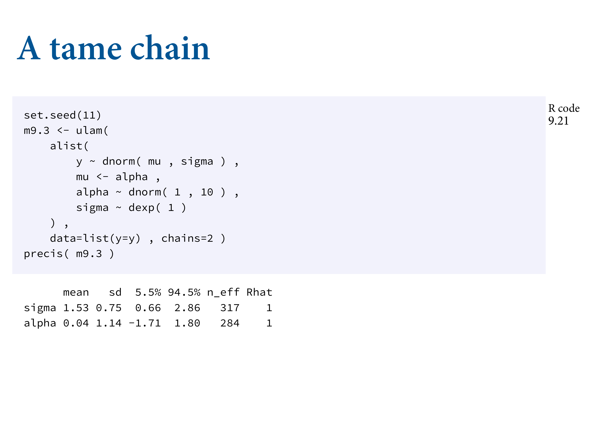
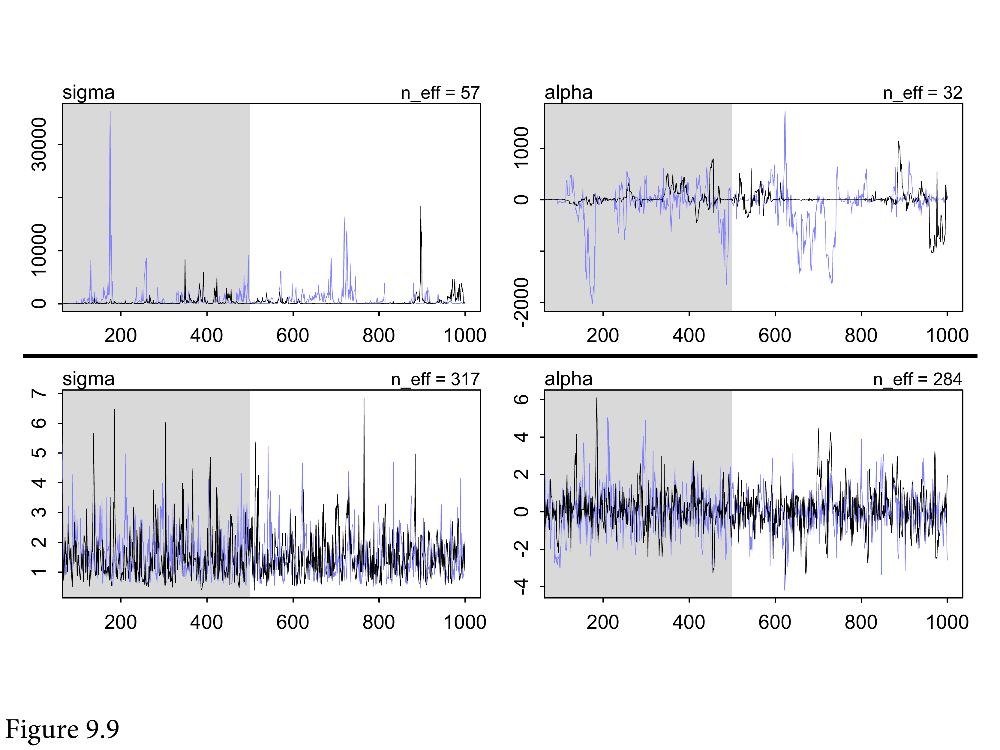
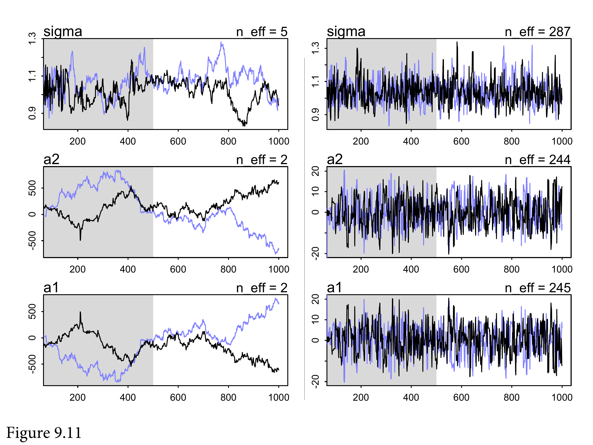
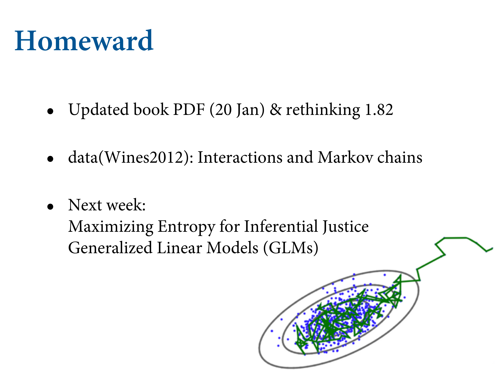

9.5 Care and feeding of your Markov chain
9.5.1. How many samples do you need?
First, what really matters is the effective number of samples, not the raw number. You can think of n_eff as the length of a Markov chain with no autocorrelation that would provide the same quality of estimate as your chain. One consequence of this definition, as you saw earlier in the chapter, is that n_eff can be larger than the length of your chain, provided sequential samples are anti-correlated in the right way. While n_eff is only an estimate, it is usually better than the raw number of samples, which can be very misleading.
Second, what do you want to know? If all you want are posterior means, it doesn’t take many samples at all to get very good estimates. Even a couple hundred samples will do. But if you care about the exact shape in the extreme tails of the posterior, the 99th percentile or so, then you’ll need many more.

The warmup setting is more subtle. On the one hand, you want to have the shortest warmup period necessary, so you can get on with real sampling. But on the other hand, more warmup can mean more efficient sampling. With Stan models, typically you can devote as much as half of your total samples, the iter value, to warmup and come out very well. But for simple models like those you’ve fit so far, much less warmup is really needed. Models can vary a lot in the shape of their posterior distributions, so again there is no universally best answer. But if you are having trouble, you might try increasing the warmup. If not, you might try reducing it.
9.5.2. How many chains do you need?
So the question naturally arises: How many chains do we need? There are three answers to this question. First, when initially debugging a model, use a single chain. There are some error messages that don’t display unless you use only one chain. The chain will fail with more than one chain, but the reason may not be displayed. This is why the ulam default is chains=1. Second, when deciding whether the chains are valid, you need more than one chain. Third, when you begin the final run that you’ll make inferences from, you only really need one chain.
There are exotic situations in which all of the advice above must be modified. But for typical regression models, you can live by the motto: >One short chain to debug, four chains for verification and inference.

9.5.3. Taming a wild chain

b9.2 <-
brm(data = list(y = c(-1, 1)),
family = gaussian,
y ~ 1,
prior = c(prior(normal(0, 1000), class = Intercept),
prior(exponential(0.0001), class = sigma)),
iter = 2000, warmup = 1000, chains = 3,
seed = 9,
file = "fits/b09.02")print(b9.2)## Warning: Parts of the model have not converged (some Rhats are > 1.05). Be
## careful when analysing the results! We recommend running more iterations and/or
## setting stronger priors.## Warning: There were 393 divergent transitions after warmup. Increasing
## adapt_delta above 0.8 may help. See http://mc-stan.org/misc/
## warnings.html#divergent-transitions-after-warmup## Family: gaussian
## Links: mu = identity; sigma = identity
## Formula: y ~ 1
## Data: list(y = c(-1, 1)) (Number of observations: 2)
## Samples: 3 chains, each with iter = 2000; warmup = 1000; thin = 1;
## total post-warmup samples = 3000
##
## Population-Level Effects:
## Estimate Est.Error l-95% CI u-95% CI Rhat Bulk_ESS Tail_ESS
## Intercept 10.68 270.90 -579.92 700.75 1.05 475 297
##
## Family Specific Parameters:
## Estimate Est.Error l-95% CI u-95% CI Rhat Bulk_ESS Tail_ESS
## sigma 453.49 1148.02 7.77 3254.50 1.06 63 50
##
## Samples were drawn using sampling(NUTS). For each parameter, Bulk_ESS
## and Tail_ESS are effective sample size measures, and Rhat is the potential
## scale reduction factor on split chains (at convergence, Rhat = 1).Whoa! This posterior can’t be right. The mean of −1 and 1 is zero, so we’re hoping to get a mean value for alpha around zero. Instead we get crazy values and implausibly wide intervals. Inference for sigma is no better. The n_eff and Rhat diagnostics don’t look good either.
You should see something like:
Warning messages:
1: There were 67 divergent transitions after warmup. Increasing adapt_delta
above 0.95 may help. See
http://mc-stan.org/misc/warnings.html#divergent-transitions-after-warmupThe warnings say that Stan detected problems in exploring all of the posterior. These are divergent transitions.
You should also see a second warning:
2: Examine the pairs() plot to diagnose sampling problemsThis refers to Stan’s pairs method, not ulam’s.
Let’s look at the unhealthy chains:
pairs(b9.2,
np = brms::nuts_params(b9.2),
off_diag_args = list(size = 1/4))post <- posterior_samples(b9.2, add_chain = T)
p1 <-
post %>%
mcmc_trace(pars = vars(b_Intercept:sigma),
size = .25)
p2 <-
post %>%
mcmc_rank_overlay(pars = vars(b_Intercept:sigma))
(
(p1 / p2) &
scale_color_pomological() &
theme_pomological_fancy(base_family = "Marck Script") &
theme(legend.position = "none")
) +
plot_annotation(subtitle = "These chains are not healthy")## Scale for 'colour' is already present. Adding another scale for 'colour',
## which will replace the existing scale.
## Scale for 'colour' is already present. Adding another scale for 'colour',
## which will replace the existing scale.## Warning: Font 'Marck Script' isn't in the extrafont font list (but it may still
## work). If recently installed, you can try running `extrafont::font_import()`. To
## install, visit: https://fonts.google.com/specimen/Marck+Script/
They show the chains spend long periods with one chain above or below the others. This indicates poor exploration of the posterior.
It’s easy to tame this particular chain by using weakly informative priors.


You might get something like this instead. Not good.


b9.3 <-
brm(data = list(y = c(-1, 1)),
family = gaussian,
y ~ 1,
prior = c(prior(normal(1, 10), class = Intercept),
prior(exponential(1), class = sigma)),
iter = 2000, warmup = 1000, chains = 3,
seed = 9,
file = "fits/b09.03")print(b9.3)## Family: gaussian
## Links: mu = identity; sigma = identity
## Formula: y ~ 1
## Data: list(y = c(-1, 1)) (Number of observations: 2)
## Samples: 3 chains, each with iter = 2000; warmup = 1000; thin = 1;
## total post-warmup samples = 3000
##
## Population-Level Effects:
## Estimate Est.Error l-95% CI u-95% CI Rhat Bulk_ESS Tail_ESS
## Intercept 0.04 1.18 -2.55 2.43 1.00 1126 1158
##
## Family Specific Parameters:
## Estimate Est.Error l-95% CI u-95% CI Rhat Bulk_ESS Tail_ESS
## sigma 1.54 0.78 0.59 3.60 1.00 961 994
##
## Samples were drawn using sampling(NUTS). For each parameter, Bulk_ESS
## and Tail_ESS are effective sample size measures, and Rhat is the potential
## scale reduction factor on split chains (at convergence, Rhat = 1).post <- posterior_samples(b9.3, add_chain = T)
p1 <-
post %>%
mcmc_trace(pars = vars(b_Intercept:sigma),
size = .25)
p2 <-
post %>%
mcmc_rank_overlay(pars = vars(b_Intercept:sigma)) +
ylim(35, NA)## Scale for 'y' is already present. Adding another scale for 'y', which will
## replace the existing scale.(
(p1 / p2) &
scale_color_pomological() &
theme_pomological_fancy(base_family = "Marck Script") &
theme(legend.position = "none")
) +
plot_annotation(subtitle = "Weakly informative priors cleared up the condition right away")## Scale for 'colour' is already present. Adding another scale for 'colour',
## which will replace the existing scale.## Scale for 'colour' is already present. Adding another scale for 'colour',
## which will replace the existing scale.## Warning: Font 'Marck Script' isn't in the extrafont font list (but it may still
## work). If recently installed, you can try running `extrafont::font_import()`. To
## install, visit: https://fonts.google.com/specimen/Marck+Script/


Typically when you’re having trouble getting your chain to work, it’s because there’s something wrong with your model definition. So first check the model.
9.5.4. Non-identifiable parameters

set.seed(9)
y <- rnorm(100, mean = 0, sd = 1)b9.4 <-
brm(data = list(y = y,
a1 = 1,
a2 = 1),
family = gaussian,
y ~ 0 + a1 + a2,
prior = c(prior(normal(0, 1000), class = b),
prior(exponential(1), class = sigma)),
iter = 2000, warmup = 1000, chains = 3,
seed = 9,
file = "fits/b09.04")print(b9.4)## Warning: Parts of the model have not converged (some Rhats are > 1.05). Be
## careful when analysing the results! We recommend running more iterations and/or
## setting stronger priors.## Family: gaussian
## Links: mu = identity; sigma = identity
## Formula: y ~ 0 + a1 + a2
## Data: list(y = y, a1 = 1, a2 = 1) (Number of observations: 100)
## Samples: 3 chains, each with iter = 2000; warmup = 1000; thin = 1;
## total post-warmup samples = 3000
##
## Population-Level Effects:
## Estimate Est.Error l-95% CI u-95% CI Rhat Bulk_ESS Tail_ESS
## a1 113.93 563.81 -599.69 1303.63 1.87 5 17
## a2 -113.99 563.81 -1303.73 599.49 1.87 5 17
##
## Family Specific Parameters:
## Estimate Est.Error l-95% CI u-95% CI Rhat Bulk_ESS Tail_ESS
## sigma 1.00 0.08 0.86 1.13 1.41 6 28
##
## Samples were drawn using sampling(NUTS). For each parameter, Bulk_ESS
## and Tail_ESS are effective sample size measures, and Rhat is the potential
## scale reduction factor on split chains (at convergence, Rhat = 1).

Again, weakly regularizing priors can rescue us.
b9.5 <-
brm(data = list(y = y,
a1 = 1,
a2 = 1),
family = gaussian,
y ~ 0 + a1 + a2,
prior = c(prior(normal(0, 10), class = b),
prior(exponential(1), class = sigma)),
iter = 2000, warmup = 1000, chains = 3,
seed = 9,
file = "fits/b09.05")print(b9.5)## Family: gaussian
## Links: mu = identity; sigma = identity
## Formula: y ~ 0 + a1 + a2
## Data: list(y = y, a1 = 1, a2 = 1) (Number of observations: 100)
## Samples: 3 chains, each with iter = 2000; warmup = 1000; thin = 1;
## total post-warmup samples = 3000
##
## Population-Level Effects:
## Estimate Est.Error l-95% CI u-95% CI Rhat Bulk_ESS Tail_ESS
## a1 -0.09 7.46 -14.99 14.38 1.00 574 576
## a2 0.04 7.47 -14.46 14.92 1.00 574 568
##
## Family Specific Parameters:
## Estimate Est.Error l-95% CI u-95% CI Rhat Bulk_ESS Tail_ESS
## sigma 0.97 0.07 0.85 1.11 1.00 1065 1077
##
## Samples were drawn using sampling(NUTS). For each parameter, Bulk_ESS
## and Tail_ESS are effective sample size measures, and Rhat is the potential
## scale reduction factor on split chains (at convergence, Rhat = 1).trace_rank <- function(data, var, subtitle = NULL, ymin = NA) {
p1 <-
data %>%
mcmc_trace(pars = var,
size = .25,
facet_args = list(ncol = 1)) +
labs(subtitle = subtitle,
y = NULL) +
facet_wrap(~ parameter)
p2 <-
data %>%
mcmc_rank_overlay(pars = var) +
coord_cartesian(ylim = c(ymin, NA)) +
xlab(NULL)
tr <- p1 + p2
tr
}# b9.4
post <- posterior_samples(b9.4, add_chain = T)
p1 <- trace_rank(data = post, var = "b_a1", subtitle = "b9.4 (bad priors)")
p2 <- trace_rank(data = post, var = "b_a2")
p3 <- trace_rank(data = post, var = "sigma")
# b9.5
post <- posterior_samples(b9.5, add_chain = T)
p4 <- trace_rank(data = post, var = "b_a1", subtitle = "b9.5 (good priors)", ymin = 30)
p5 <- trace_rank(data = post, var = "b_a2", ymin = 30)
p6 <- trace_rank(data = post, var = "sigma", ymin = 30)
# combine!
(p1 / p2 / p3 / p4 / p5 / p6) &
scale_color_pomological() &
theme_pomological_fancy(base_family = "Marck Script") &
theme(legend.position = "none")## Scale for 'colour' is already present. Adding another scale for 'colour',
## which will replace the existing scale.
## Scale for 'colour' is already present. Adding another scale for 'colour',
## which will replace the existing scale.
## Scale for 'colour' is already present. Adding another scale for 'colour',
## which will replace the existing scale.
## Scale for 'colour' is already present. Adding another scale for 'colour',
## which will replace the existing scale.
## Scale for 'colour' is already present. Adding another scale for 'colour',
## which will replace the existing scale.
## Scale for 'colour' is already present. Adding another scale for 'colour',
## which will replace the existing scale.
## Scale for 'colour' is already present. Adding another scale for 'colour',
## which will replace the existing scale.
## Scale for 'colour' is already present. Adding another scale for 'colour',
## which will replace the existing scale.
## Scale for 'colour' is already present. Adding another scale for 'colour',
## which will replace the existing scale.
## Scale for 'colour' is already present. Adding another scale for 'colour',
## which will replace the existing scale.
## Scale for 'colour' is already present. Adding another scale for 'colour',
## which will replace the existing scale.
## Scale for 'colour' is already present. Adding another scale for 'colour',
## which will replace the existing scale.## Warning: Font 'Marck Script' isn't in the extrafont font list (but it may still
## work). If recently installed, you can try running `extrafont::font_import()`. To
## install, visit: https://fonts.google.com/specimen/Marck+Script/

